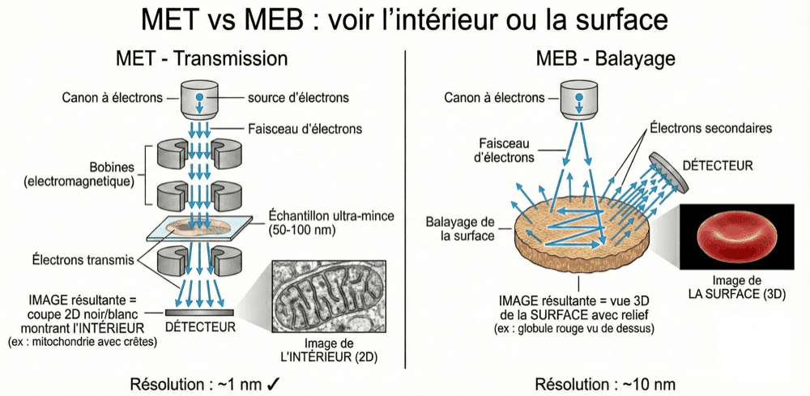

Microscopie électronique : MET et MEB
La lumière visible bute vers 0,2 à 0,4 µm, et aucun grossissement ne passe cette barrière.
La seule sortie : changer de rayonnement.
Coloration, histochimie, immunohistochimie, hybridation in situ : toutes les techniques que tu viens de voir se lisent au microscope optique. Elles partagent donc son plafond — une limite de résolution d'environ 0,2 à 0,4 µm (0,4 µm avec un objectif standard, 0,2 µm au mieux). Et tu connais les deux leviers de la résolution : la longueur d'onde (λ) et l'ouverture numérique (NA) de l'objectif. Le second, on l'a déjà poussé — c'est l'huile d'immersion des objectifs ×100. Pour voir des structures plus petites (organites, membranes, virus), il ne reste donc que le premier : changer de rayonnement, et passer aux électrons.
Pourquoi les électrons ? Rappel : la résolution dépend de la longueur d'onde (λ). Plus λ est petite, meilleure est la résolution. Or la lumière visible a une λ de 400 à 700 nm → résolution ~0,2 µm ; les électrons accélérés, eux, ont une λ d'environ 0,005 nm → résolution théorique ~0,1 nm. Le saut n'est pas un réglage, c'est un changement de nature.
⚡ Le principe de De Broglie. Les électrons ont une nature ondulatoire (dualité onde-particule) : ils se comportent aussi comme une onde, donc ils ont une longueur d'onde. Et plus on les accélère, plus leur longueur d'onde diminue. En les accélérant sous vide à haute tension (50-100 kV), on obtient des λ ultra-courtes → une résolution sans commune mesure avec celle des photons.
Avec ce faisceau d'électrons, on construit deux appareils, et ce qui les sépare tient en un mot : ce que le faisceau fait de l'échantillon. Le microscope électronique à transmission (MET) le traverse ; le microscope électronique à balayage (MEB) en balaye la surface. Tout le reste — préparation, type d'image, résolution — découle de cette seule différence.
| Caractéristique | MET (Transmission) | MEB (Balayage) |
|---|---|---|
| Principe | Les électrons traversent l'échantillon | Les électrons balayent la surface |
| Préparation | Coupes ultra-fines (50-100 nm) | Échantillon entier, métallisé |
| Type d'image | Coupe 2D (l'intérieur) | Surface 3D (le relief) |
| Résolution | ~1 nm (subcellulaire !) | ~10 nm |
| Applications | Ultrastructure des organites, virus | Morphologie de surface, bactéries |

Le MET : voir l'ultrastructure. Le microscope électronique à transmission est l'outil de choix pour observer l'ultrastructure cellulaire — les détails invisibles en microscopie optique. Avec sa résolution d'environ 1 nm, il montre les membranes biologiques (leur aspect trilaminaire : 2 feuillets sombres + 1 clair central), les ribosomes (25 nm), les crêtes mitochondriales et leurs matrices, le réticulum endoplasmique et sa continuité avec l'enveloppe nucléaire, les virus (20-300 nm) et les filaments du cytosquelette.
📏 L'ordre de grandeur à retenir. Une résolution de 1 nm, c'est 200× meilleur que le microscope optique (~200 nm). Et c'est précisément ce qui fait basculer les choses : le ribosome (25 nm) et l'épaisseur d'une membrane (8 nm) — les deux exemples qu'on avait donnés comme définitivement invisibles en microscopie optique — deviennent observables.
- 1 Fixation renforcée. Glutaraldéhyde, puis tétroxyde d'osmium (OsO₄).
- 2 Inclusion en résine. Et non en paraffine (trop molle).
- 3 Coupes ultra-fines. 50 à 100 nm, à l'ultramicrotome (lame de diamant ou de verre).
- 4 Contraste. Aux métaux lourds (acétate d'uranyle, citrate de plomb).
Le MEB : voir le relief. Le microscope électronique à balayage donne des images spectaculaires de la surface des objets, avec un effet 3D saisissant. Après fixation et déshydratation, l'échantillon subit un séchage au point critique (qui évite la déformation due à la tension de surface) puis une métallisation : le dépôt d'une fine couche de métal conducteur — or ou platine — pour permettre le passage des électrons.
| Caractéristique | Microscopie optique | Microscopie électronique |
|---|---|---|
| Rayonnement | Photons (lumière visible) | Électrons accélérés |
| Résolution | ~0,2 µm (200 nm) — 0,4 µm avec un objectif standard | ~1 nm (MET) |
| Grossissement max | ~1 000× | ~500 000× (MET) |
| Observation | Cellules et tissus | Ultrastructure, organites |
| Échantillons vivants ? | Possible (contraste de phase) | Non (vide poussé) |
| Couleurs ? | Oui (colorations, fluorescence) | Non (niveaux de gris) |
| Coût, accessibilité | Accessible, routine | Coûteux, plateformes spécialisées |
Et voilà le bloc « méthodes » bouclé. Il tient en deux mots : des outils (les microscopes — optique, fluorescence, confocal, électronique) et des techniques (fixation, inclusion, coupe, coloration, marquages spécialisés). Tu sais maintenant comment on regarde un tissu. La suite, c'est ce qu'on y voit : les quatre familles de tissus, une par une.